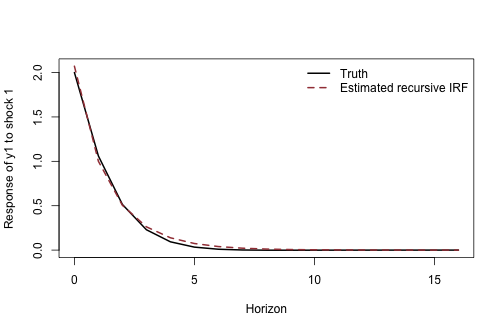
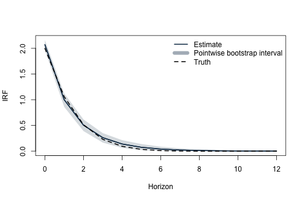
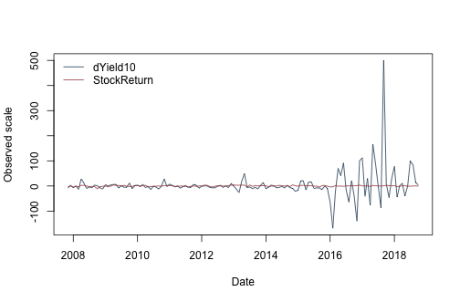
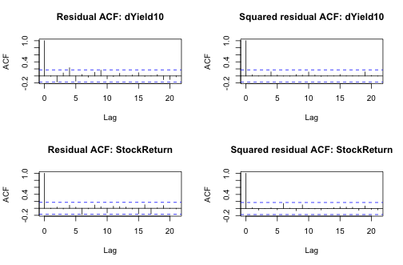
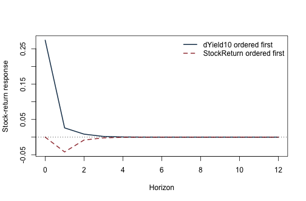

《財務時間序列分析》線上附錄
R16：VAR、識別與衝擊反應函數
本附錄對應第 21 章。第一部分使用已知結構的教學模擬核對 VAR、Cholesky 當期影響矩陣與 IRF；第二部分使用固定日本月資料示範縮減式落後階數選擇與排序敏感度。沒有額外外生資訊時，實證曲線不命名為已識別的政策衝擊。
執行條件#
- base R 與
knitr；不安裝套件、不連線下載。 - 固定實證資料：
data/processed/japan_monthly_2007_2018.csv。 - 模擬固定種子；所有矩陣與 IRF 函數明列如下。
knitr::opts_chunk$set(
echo = TRUE, message = FALSE, warning = FALSE,
fig.width = 7, fig.height = 4.6
)
set.seed(20260716)
VAR 工具函數#
lag_matrix <- function(Y, p) {
Tn <- nrow(Y)
stopifnot(p >= 1L, Tn > p)
X <- matrix(NA_real_, nrow = Tn - p, ncol = ncol(Y) * p)
nm <- character(ncol(X))
col <- 1L
for (lag in seq_len(p)) {
block <- Y[(p + 1L - lag):(Tn - lag), , drop = FALSE]
cols <- col:(col + ncol(Y) - 1L)
X[, cols] <- block
nm[cols] <- paste0(colnames(Y), "_L", lag)
col <- col + ncol(Y)
}
colnames(X) <- nm
X
}
fit_var <- function(Y, p = 1L, include_const = TRUE) {
Y <- as.matrix(Y)
Xlag <- lag_matrix(Y, p)
Ydep <- Y[(p + 1L):nrow(Y), , drop = FALSE]
X <- if (include_const) cbind(Intercept = 1, Xlag) else Xlag
coef <- qr.solve(X, Ydep)
resid <- Ydep - X %*% coef
n_eff <- nrow(resid)
K <- ncol(Y)
sigma_ml <- crossprod(resid) / n_eff
logdet <- as.numeric(determinant(sigma_ml, logarithm = TRUE)$modulus)
n_parameters <- K * ncol(X)
bic <- logdet + log(n_eff) * n_parameters / n_eff
A <- vector("list", p)
offset <- if (include_const) 1L else 0L
for (lag in seq_len(p)) {
rows <- offset + ((lag - 1L) * K + 1L):(lag * K)
A[[lag]] <- t(coef[rows, , drop = FALSE])
}
list(
coef = coef, A = A, residuals = resid,
sigma = sigma_ml, bic = bic, p = p,
intercept = if (include_const) coef[1, ] else rep(0, K),
Y = Y
)
}
companion_matrix <- function(A_list) {
p <- length(A_list)
K <- nrow(A_list[[1]])
F <- matrix(0, K * p, K * p)
F[1:K, ] <- do.call(cbind, A_list)
if (p > 1L) F[(K + 1):(K * p), 1:(K * (p - 1L))] <- diag(K * (p - 1L))
F
}
ma_coefficients <- function(A_list, horizon) {
p <- length(A_list)
K <- nrow(A_list[[1]])
Phi <- vector("list", horizon + 1L)
Phi[[1]] <- diag(K)
if (horizon >= 1L) {
for (h in seq_len(horizon)) {
value <- matrix(0, K, K)
for (lag in seq_len(min(p, h))) {
value <- value + A_list[[lag]] %*% Phi[[h - lag + 1L]]
}
Phi[[h + 1L]] <- value
}
}
Phi
}
recursive_irf <- function(fit, horizon = 12L) {
# R 的 chol 回傳上三角 R，且 t(R) %*% R = Sigma。
B <- t(chol(fit$sigma))
Phi <- ma_coefficients(fit$A, horizon)
Theta <- lapply(Phi, function(P) P %*% B)
list(B = B, Phi = Phi, Theta = Theta)
}
已知結構的 VAR(1) 模擬#
A_true <- matrix(c(0.50, 0.10,
-0.20, 0.40), 2, 2, byrow = TRUE)
B_true <- matrix(c(2.0, 0.0,
0.6, 0.8), 2, 2, byrow = TRUE)
Sigma_true <- B_true %*% t(B_true)
eigen(A_true)$values
## [1] 0.45+0.1322876i 0.45-0.1322876i
Sigma_true
## [,1] [,2]
## [1,] 4.0 1.2
## [2,] 1.2 1.0
burn <- 200L
Tn <- 700L
eps <- matrix(rnorm((Tn + burn) * 2), ncol = 2)
Y <- matrix(0, Tn + burn, 2)
for (t in 2:nrow(Y)) {
Y[t, ] <- A_true %*% Y[t - 1, ] + B_true %*% eps[t, ]
}
Y <- Y[(burn + 1):(burn + Tn), ]
colnames(Y) <- c("y1", "y2")
fit_sim <- fit_var(Y, p = 1)
irf_sim <- recursive_irf(fit_sim, horizon = 16)
list(
A_true = A_true,
A_hat = fit_sim$A[[1]],
Sigma_true = Sigma_true,
Sigma_hat = fit_sim$sigma,
B_true = B_true,
B_hat = irf_sim$B,
companion_modulus = Mod(eigen(companion_matrix(fit_sim$A))$values)
)
## $A_true
## [,1] [,2]
## [1,] 0.5 0.1
## [2,] -0.2 0.4
##
## $A_hat
## y1_L1 y2_L1
## y1 0.4965446 -0.04780143
## y2 -0.1823818 0.35551865
##
## $Sigma_true
## [,1] [,2]
## [1,] 4.0 1.2
## [2,] 1.2 1.0
##
## $Sigma_hat
## y1 y2
## y1 4.290916 1.225577
## y2 1.225577 1.011608
##
## $B_true
## [,1] [,2]
## [1,] 2.0 0.0
## [2,] 0.6 0.8
##
## $B_hat
## y1 y2
## y1 2.0714525 0.0000000
## y2 0.5916509 0.8133617
##
## $companion_modulus
## [1] 0.5430368 0.3090265
Base R 沒有矩陣次方運算子；為避免隱藏套件依賴，以下用遞迴函數計算真實 IRF。
h <- 0:16
Phi_true <- ma_coefficients(list(A_true), max(h))
Theta_true <- lapply(Phi_true, function(P) P %*% B_true)
response <- function(theta_list, response_index, shock_index) {
vapply(theta_list, function(M) M[response_index, shock_index], numeric(1))
}
plot(h, response(Theta_true, 1, 1), type = "l", lwd = 2,
ylim = range(c(response(Theta_true, 1, 1),
response(irf_sim$Theta, 1, 1))),
xlab = "Horizon", ylab = "Response of y1 to shock 1",
col = "black")
lines(h, response(irf_sim$Theta, 1, 1), lwd = 2, lty = 2,
col = "#A34045")
legend("topright", c("Truth", "Estimated recursive IRF"),
col = c("black", "#A34045"), lwd = 2, lty = c(1, 2), bty = "n")

殘差拔靴法 pointwise intervals#
這個教學 bootstrap 固定 lag 為 1，每次按「整個殘差向量」重抽，以保留同期跨方程共變動。它不處理條件異質變異。
bootstrap_var_irf <- function(fit, horizon = 12L, B_rep = 299L,
seed = 20260716) {
set.seed(seed)
Y <- fit$Y
Tn <- nrow(Y)
K <- ncol(Y)
U <- sweep(fit$residuals, 2, colMeans(fit$residuals))
draws <- array(NA_real_, dim = c(B_rep, horizon + 1L, K, K))
for (b in seq_len(B_rep)) {
Yb <- matrix(0, Tn, K)
Yb[1, ] <- Y[1, ]
sampled <- U[sample(seq_len(nrow(U)), Tn - 1L, replace = TRUE), , drop = FALSE]
for (t in 2:Tn) {
Yb[t, ] <- fit$intercept + fit$A[[1]] %*% Yb[t - 1, ] + sampled[t - 1L, ]
}
fb <- fit_var(Yb, p = 1)
ib <- recursive_irf(fb, horizon)
for (j in 0:horizon) draws[b, j + 1L, , ] <- ib$Theta[[j + 1L]]
}
draws
}
boot <- bootstrap_var_irf(fit_sim, horizon = 12, B_rep = 199)
pointwise <- apply(boot[, , 1, 1], 2, quantile, probs = c(0.025, 0.975))
estimate <- response(recursive_irf(fit_sim, 12)$Theta, 1, 1)
truth <- response(Theta_true[1:13], 1, 1)
plot(0:12, estimate, type = "l", lwd = 2, col = "#173B57",
ylim = range(pointwise, truth), xlab = "Horizon", ylab = "IRF")
polygon(c(0:12, 12:0), c(pointwise[1, ], rev(pointwise[2, ])),
col = adjustcolor("#173B57", alpha.f = 0.18), border = NA)
lines(0:12, estimate, lwd = 2, col = "#173B57")
lines(0:12, truth, lwd = 2, lty = 2, col = "black")
legend("topright", c("Estimate", "Pointwise bootstrap interval", "Truth"),
col = c("#173B57", adjustcolor("#173B57", 0.4), "black"),
lwd = c(2, 8, 2), lty = c(1, 1, 2), bty = "n")

固定日本月資料：reduced-form 示範#
使用 return_j 與 yield_10_change。兩者已是變動/報酬尺度，但是否定態仍須另做圖形與單根診斷。這裡只示範 VAR 程序。
jp_path <- "data/processed/japan_monthly_2007_2018.csv"
jp <- read.csv(jp_path, stringsAsFactors = FALSE)
jp$date <- as.Date(jp$date)
jp <- jp[order(jp$date), ]
keep <- complete.cases(jp[, c("return_j", "yield_10_change")])
Y_jp <- as.matrix(jp[keep, c("yield_10_change", "return_j")])
dates_jp <- jp$date[keep]
colnames(Y_jp) <- c("dYield10", "StockReturn")
matplot(dates_jp, Y_jp, type = "l", lty = 1,
col = c("#173B57", "#A34045"),
xlab = "Date", ylab = "Observed scale")
legend("topleft", colnames(Y_jp), col = c("#173B57", "#A34045"),
lty = 1, bty = "n")

candidates <- lapply(1:4, function(p) fit_var(Y_jp, p))
bic_table <- data.frame(
lag = 1:4,
BIC = vapply(candidates, function(x) x$bic, numeric(1)),
max_root = vapply(candidates, function(x) {
max(Mod(eigen(companion_matrix(x$A))$values))
}, numeric(1))
)
bic_table
## lag BIC max_root
## 1 1 9.831048 0.2457373
## 2 2 9.960418 0.4215238
## 3 3 10.090121 0.5065380
## 4 4 10.198418 0.7417764
p_selected <- bic_table$lag[which.min(bic_table$BIC)]
fit_jp <- candidates[[p_selected]]
par(mfrow = c(2, 2))
for (j in 1:2) {
acf(fit_jp$residuals[, j], main = paste("Residual ACF:", colnames(Y_jp)[j]))
acf(fit_jp$residuals[, j]^2,
main = paste("Squared residual ACF:", colnames(Y_jp)[j]))
}

par(mfrow = c(1, 1))
排序敏感度#
irf_order_1 <- recursive_irf(fit_jp, 12)
# 反轉變數、重估，再把 response/shock 索引轉回原順序。
Y_rev <- Y_jp[, 2:1]
fit_rev <- fit_var(Y_rev, p_selected)
irf_rev <- recursive_irf(fit_rev, 12)
# 原順序：dYield10 第一，StockReturn 第二。
response_order_1 <- response(irf_order_1$Theta, 2, 1)
# 反順序：StockReturn 第一、dYield10 第二；目標改為 shock 2 對 response 1。
response_order_2 <- response(irf_rev$Theta, 1, 2)
plot(0:12, response_order_1, type = "l", lwd = 2,
ylim = range(response_order_1, response_order_2),
xlab = "Horizon", ylab = "Stock-return response",
col = "#173B57")
lines(0:12, response_order_2, lwd = 2, lty = 2, col = "#A34045")
abline(h = 0, lty = 3)
legend("topright",
c("dYield10 ordered first", "StockReturn ordered first"),
col = c("#173B57", "#A34045"), lwd = 2, lty = c(1, 2), bty = "n")

兩條曲線只是在不同遞迴限制下得到的正交化創新項反應。沒有外部工具、制度時點或高頻識別，不能只因第一條較符合敘事就稱為政策衝擊。
最低報告清單#
- 變數轉換、順序、樣本期與 lag rule。
- companion roots、殘差及平方殘差 ACF。
- 當期影響矩陣 \(B\) 與衝擊正規化。
- 至少一個合理替代 ordering。
- interval 是 pointwise 或 simultaneous；bootstrap 是否適合條件異質變異。
- 若識別理由不足，退回縮減式或正交化創新項的語言。
sessionInfo()
## R version 4.5.2 (2025-10-31)
## Platform: aarch64-apple-darwin20
## Running under: macOS Tahoe 26.5.1
##
## Matrix products: default
## BLAS: /System/Library/Frameworks/Accelerate.framework/Versions/A/Frameworks/vecLib.framework/Versions/A/libBLAS.dylib
## LAPACK: /Library/Frameworks/R.framework/Versions/4.5-arm64/Resources/lib/libRlapack.dylib; LAPACK version 3.12.1
##
## locale:
## [1] C.UTF-8/C.UTF-8/C.UTF-8/C/C.UTF-8/C.UTF-8
##
## time zone: Asia/Tokyo
## tzcode source: internal
##
## attached base packages:
## [1] stats graphics grDevices utils datasets methods base
##
## other attached packages:
## [1] tibble_3.3.0 dplyr_1.2.1
##
## loaded via a namespace (and not attached):
## [1] vctrs_0.7.2 cli_3.6.5 knitr_1.51 rlang_1.1.7
## [5] xfun_0.57 otel_0.2.0 MatrixModels_0.5-4 generics_0.1.4
## [9] glue_1.8.0 grid_4.5.2 evaluate_1.0.5 SparseM_1.84-2
## [13] MASS_7.3-65 lifecycle_1.0.5 compiler_4.5.2 pkgconfig_2.0.3
## [17] quantreg_6.1 lattice_0.22-7 R6_2.6.1 tidyselect_1.2.1
## [21] utf8_1.2.6 splines_4.5.2 pillar_1.11.1 magrittr_2.0.4
## [25] Matrix_1.7-4 tools_4.5.2 withr_3.0.2 survival_3.8-3